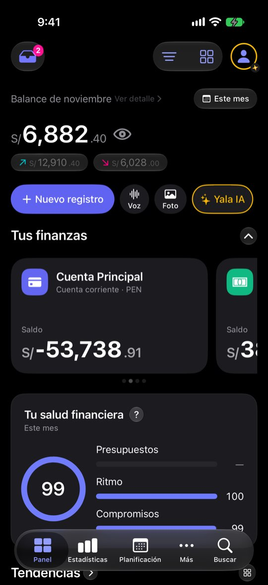
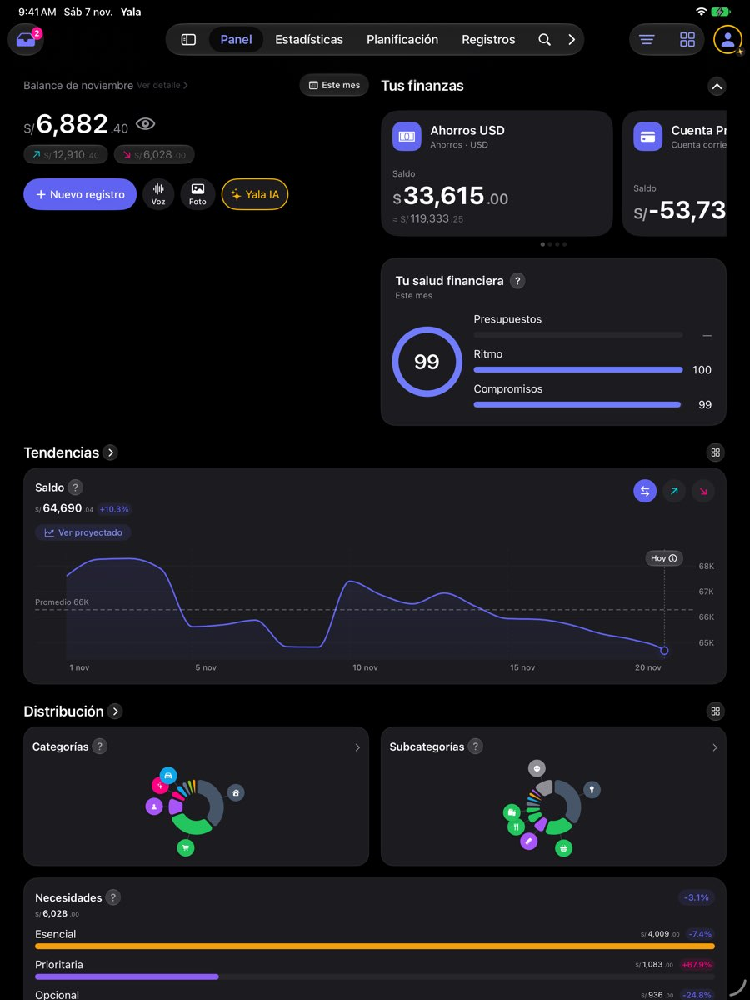

Las cuentas se ven de una en una, sin total y sin señal cuando una está en rojo
ficha con el reloj del simulador en el 20 de noviembre de 2026: cuatro cuentas (Ahorros USD $33,615 · Cuenta Principal S/ −53,738.91 · Efectivo S/ 380 · Tarjeta de crédito S/ 1,284.30 por pagar), balance de noviembre S/ 6,882.40 (entró S/ 12,910.40, salió S/ 6,028), saldo total S/ 64,690.04 y una nota de salud de 99. El saldo negativo de la Cuenta Principal sale de cómo la semilla reparte dos años de gastos; aquí sirve para ver qué hace el Panel con una cuenta en rojo. Ninguna cifra es de una persona real.Lo que se ve hoy
- Observado Capturas 07-10 (carrusel), 01 y 05 (plegada, sin salud) y 40-41 (iPad)
- Observado Código: plegada solo pinta la fila de chips; la salud vive dentro del contenido desplegado (PanelPanoramaSection.swift:33-49)
- Hipótesis Quien tiene varias cuentas (perfiles P1 y P6) no ve su foto completa sin deslizar



Alternativas
Todas con el mismo caso. Las cifras salen de las capturas salvo donde la maqueta dice «ilustrativo».
Lista compacta con total
Filas como las de Ajustes: icono, nombre, saldo. Total arriba y marca en la cuenta en rojo.
A favor
- Todo a la vista con 4-6 cuentas
- Se lee bien con texto grande
En contra
- Pierde la tarjeta grande, que da identidad
- Con muchas cuentas hay que decidir un tope y «Ver todas»
Cuadrícula de dos columnas
Mini tarjetas de dos en dos con el total arriba.
A favor
- Cabe todo sin perder del todo la tarjeta
En contra
- Los nombres largos se cortan
- Con texto grande vuelve a una columna
Carrusel de hoy + total + aviso
Se queda el carrusel. Se añaden la fila de total (la B de PN-1) y la marca «En negativo». La salud se queda visible al plegar.
A favor
- El cambio más pequeño
- No reabre ninguna decisión
En contra
- Sigue habiendo que deslizar para ver cada cuenta
iPad: cuentas en cuadrícula
En pantalla ancha, las cuentas pasan a cuadrícula junto al hero.
A favor
- Aprovecha el iPad, donde hoy sobra espacio
En contra
- Una disposición más que mantener
Lado a lado
| A | B | C | D | |
|---|---|---|---|---|
| Todas las cuentas a la vista | Sí | Sí | No | Sí (iPad) |
| Total y aviso de rojo | Sí | Sí | Sí | Sí |
| Reabre el carrusel | Sí | Sí | No | No |
Recomendación
C en el iPhone y D en el iPad. C añade lo que falta sin tirar el carrusel; D usa el espacio que hoy sobra. Si con C la gente sigue sin ver sus cuentas, A es el siguiente paso.
Decide Jürgen
¿Se queda el carrusel con total y aviso (C) o pasa a lista (A) o cuadrícula (B)? ¿Cuadrícula en el iPad (D)? ¿La salud se queda visible al plegar?
Revisión por vistas 2.3 · Panel · 7-nov-2026. Capturas del simulador (build Debug de origin/2.3, iPhone 17 Pro e iPad Pro 13, iOS 27.2, modo oscuro, datos ficticios). Los siete perfiles son lentes simuladas, no entrevistas.